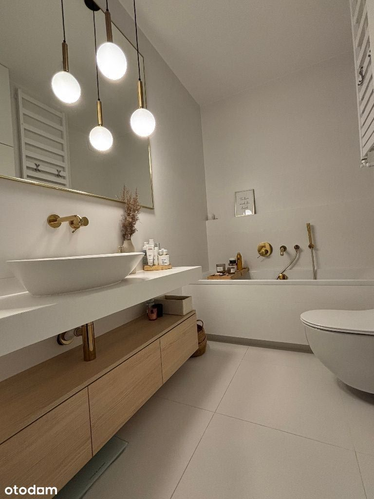
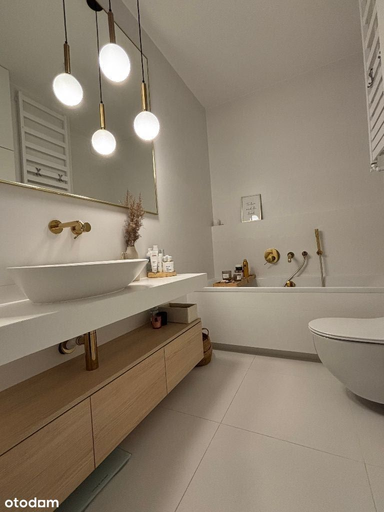
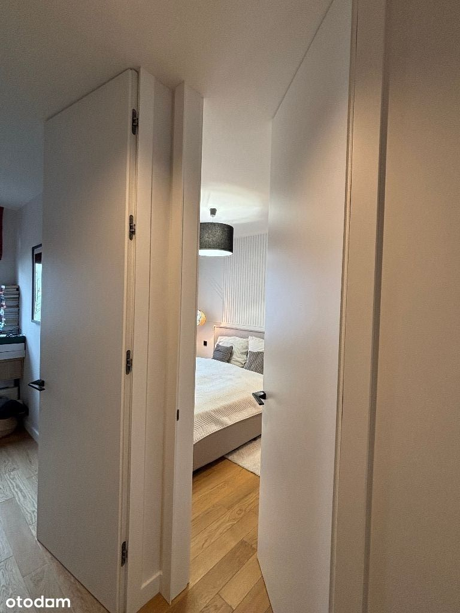
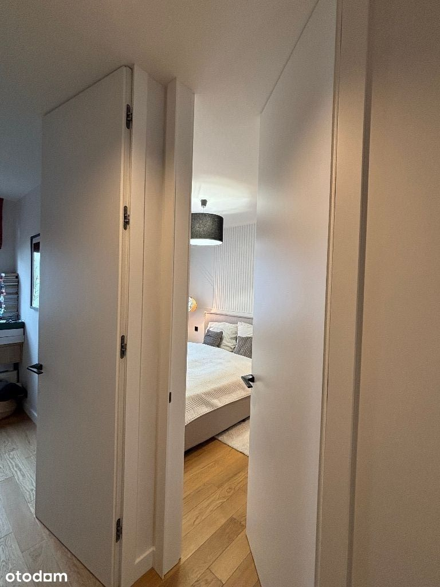

CENA DO NEGOCJACJI
DOSTĘPNOŚĆ OD RĘKI
Zapraszamy serdecznie do zapoznania się z ofertą sprzedaży bardzo eleganckiego apartamentu 3-pokojowego:
LOKALIZACJA
Ul. Wierna - Targówek, osiedle Wilno
- Metraż: 74,2 m2.
- 3 pokoje, 2 łazienki (wanna i prysznic), kuchnia, garderoba.
- Dodatkowo miejsce postojowe i komórka lokatorska
- Klimatyzacja
- Mieszkanie o podwyższonym standardzie - drewniane podłogi, wysokie wewnętrzne drzwi zamawiane pod wymiar, rolety, łazienki z meblami pod wymiar, wysokiej jakości AGD etc. Bardzo zadbane - praktycznie bez większych śladów użytkowania. Urządzone w klasycznym stylu - biele, drewno (dąb), złote lub czarno dodatki
- loggia 6m
- drzwi antywłamaniowe
- rok zabudowy 2021
- piętro 1 (budynek 3 piętrowy)
- czynsz ok. 900 zł z miejscem postojowym
- kameralne nowoczesne osiedle. Bardzo dobre zaplecze handlowo - usługowe, na osiedlu liczne sklepy (m.in. Carrefour Express, Żabki, piekarnie), salony kosmetyczne i fryzjerskie, punkty usługowe, alejki, fontanny i place zabaw.
- Osiedle posiada własną stację kolejową (5min do metra Dworzec Wileński) oraz linię autobusową (5-10 minut do metra Trocka)
- ekspozycja okien na dwie strony świata
ROZKŁAD POMIESZCZEŃ
Na 74,2 m2 znajdują się:
- salon
- częściowo otwarta kuchnia (możliwość połączenia z salonem)
- 2 sypialnie
- 2 łazienki (prysznic + wanna)
- 6 m2 taras - loggia
Mieszkanie dwustronne, funkcjonalne i przestronne, z wysokim sufitem.
LOKALIZACJA
Mieszkanie znajduje się w spokojnej, zielonej okolicy z doskonałym dostępem do infrastruktury miejskiej. W pobliżu znajdują się sklepy, szkoły, przedszkola oraz tereny rekreacyjne. Bliskość komunikacji miejskiej, w tym przystanku kolejki SKM Warszawa Zacisze - Wilno , zapewnia komfortowy dojazd do różnych części miasta.
DODATKOWE INFORMACJE
Osiedle Wilno to nowoczesna inwestycja z pełną infrastrukturą miejską, zlokalizowana w dzielnicy Targówek. Dzięki stacji kolejowej Warszawa Zacisze-Wilno, mieszkańcy mogą w 15 minut dotrzeć do centrum miasta. W okolicy znajdują się liczne tereny zielone, placówki edukacyjne i handlowe, co czyni osiedle idealnym miejscem do życia dla rodzin.
Dodatkowo:
+ 45.000 PLN: miejsce postojowe w garażu podziemnym, + 20 tys komórka
Zapraszamy na prezentację, CENA DO NEGOCJACJI
tel 506744417
 
 
